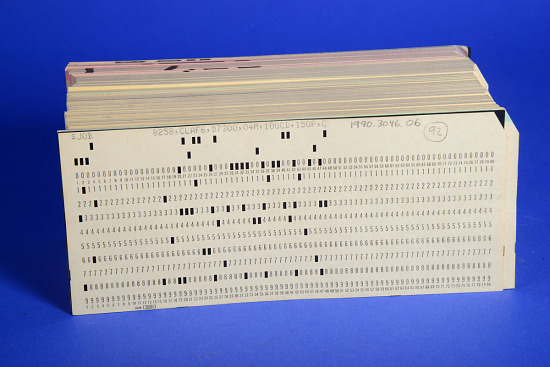
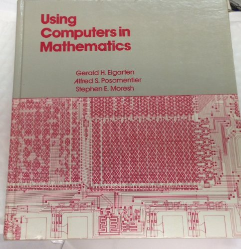
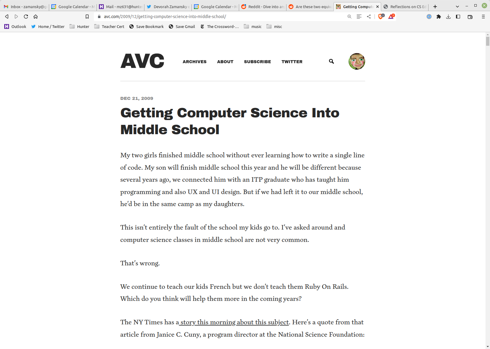

CS Ed, Stuy, and New York
Mike Zamansky
zamansky@gmail.com
cestlaz.github.io
Hi

- Stuy '84
- Stuy Teacher 1993-2012
- Also Hunter College
The Stone Age
- 1980s
- Hobbyists teaching
- Electives only
- APCS (AB) in 1984

The Bronze Age
- Stuy - 2 years of electives
- City - Programming for Remedial Math
- APCS split into A and AB
The Iron Age
- Stuy's required intro course
- Growth to multiple teachers
A Turning Point

To a first Golden Age

Modern age
5 Full time teachers
Class Sections Intro 24 APCS 5 Systems (Fall) 2 Graphics (Spring) 2 SoftDev (full year) 2 AI 1
UsaToday
- Some states have standards
- Some states have requirements
- Some states have teacher requirements
- Advanced schools do pre-college
APCS-P and APCS-A rule
Stuy Today
8 Full time teachers
Class Sections Foundations (full) 13 Foundations (half) 6 APCS 7 NeXTCS 4 Systems (Fall) 2 Graphics (Spring)* 2 SoftDev (full year) 2 Cybersecurity (Spring) 2 Ethics 1
Plus
- Mentoring
- Clubs
- AI